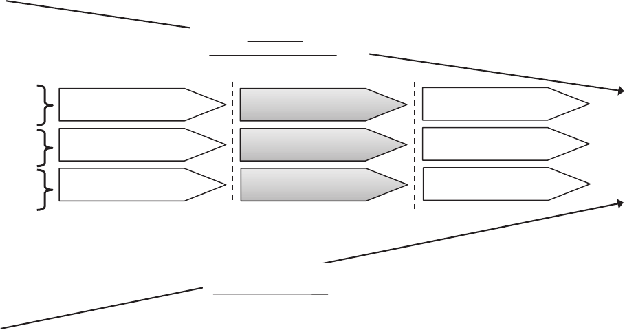
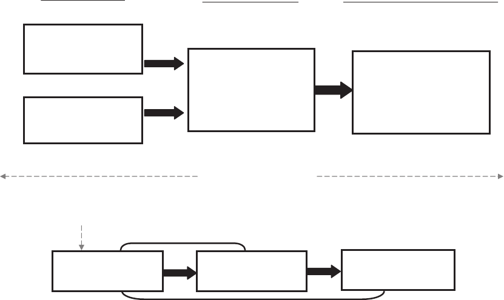
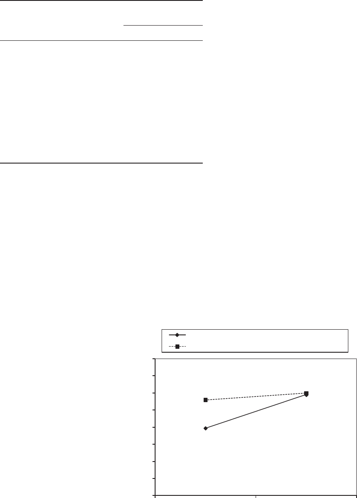
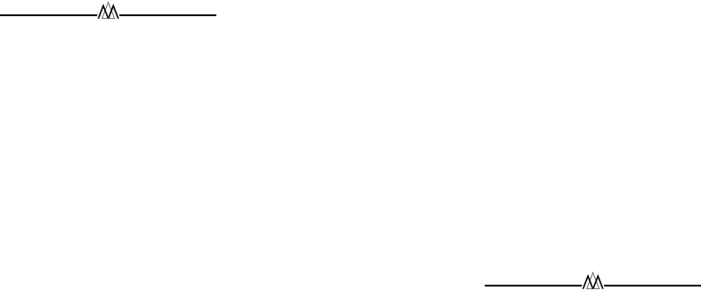

IS THIS HOW I WILL BE TREATED? REDUCING
UNCERTAINTY THROUGH RECRUITMENT INTERACTIONS
H. JACK WALKER
Auburn University
TALYA N. BAUER
Portland State University
MICHAEL S. COLE
Texas Christian University
JEREMY B. BERNERTH
Louisiana State University
HUBERT S. FEILD
Auburn University
JEREMY C. SHORT
University of Oklahoma
While a great deal of research has investigated strategies for increasing job seekers’
initial attraction to organizations, far less is known about how job seekers respond to
recruitment activities after application submission. We draw from signaling, uncer-
tainty reduction, and uncertainty management theories to develop a conceptual model
of the relationship between recruitment interactions (contact episodes) after applica-
tion submission and organizational attraction. We test this model in three independent
studies with data collected at multiple time periods. Study 1 employed a time-lagged
research design with actual job seekers. Findings showed that justice perceptions
associated with recruitment interactions influence attraction to an organization indi-
rectly and directly via positive relational certainty (i.e., reduced uncertainty regarding
how organizational relations might be upon entering the organization). Study 2 used a
controlled experimental design to provide additional evidence of the relational cer-
tainty mechanism through which justice signals influence attraction. Finally, Study 3
incorporated a longitudinal (repeated-measures) design to examine reactions to re-
cruitment interactions over ten weeks. Results indicated that the relationship between
justice signals and organizational attraction via positive relational certainty is dy-
namic, suggesting that organizations should carefully manage their communications
throughout the recruitment process.
Recruitment is an essential function for organi-
zations, as “human capital” is a key component of
an organization’s success and stock valuation
(Huselid, Jackson, & Schuler, 1997). Despite the
importance of human resource recruitment in ac-
quiring and maintaining a key organizational re-
source, this function poses ongoing challenges for
organizations (Rynes & Cable, 2003). Of 628 staffing
professionals surveyed in 2006, 73 percent re-
ported increased recruiting competition hindered
efforts to attract top talent in the marketplace (How-
ard, Erker, & Bruce, 2006). Such challenges remain
even in times of relatively high unemployment
(Ployhart, 2006), and organizations that fail to make
recruitment a priority fare poorly in the “war for
talent” (Chapman, Uggerslev, Carroll, Piasentin, &
Jones, 2005). In contrast, firms that manage this
The authors thank Wendy Boswell, Brian Dineen, Ber-
rin Erdogan, Lauren Simon, Pamela Tierney, and Donald
Truxillo for their comments and suggestions on earlier
versions of this work.
1325
Academy of Management Journal
2013, Vol. 56, No. 5, 1325–1347.
http://dx.doi.org/10.5465/amj.2011.0196
Copyright of the Academy of Management, all rights reserved. Contents may not be copied, emailed, posted to a listserv, or otherwise transmitted without the copyright holder’s express
written permission. Users may print, download, or email articles for individual use only.
task effectively enable a potential competitive ad-
vantage because human capital influences organi-
zational performance (Hitt, Bierman, Shimizu, &
Kochhar, 2001; Ployhart, 2011).
Given the documented importance of recruit-
ment to long-term organizational survival, it is not
surprising that a growing body of research focuses
on identifying strategies to improve recruitment
success (see Breaugh [2008] and Ployhart [2006] for
reviews). Specifically, this stream of research ex-
amines ways organizations can design activities to
better identify and attract potential employees. For
example, organizations can improve job seekers’
initial organizational perceptions by considering
factors such as job advertisement content (High-
house, Beadle, Gallo, & Miller, 1998; Walker, Feild,
Giles, & Bernerth, 2008), advertised organizational
diversity policies (Williams & Bauer, 1994), and
recruitment website design (Allen, Mahto, &
Otondo, 2007; Walker, Feild, Giles, Armenakis, &
Bernerth, 2009).
While these advancements provide valuable in-
sight regarding recruitment, several important the-
oretical and methodological gaps in the literature
limit understanding of key phases and mechanisms
during the recruitment process. For example,
scholars have noted that recruitment research has
had relatively weak theoretical grounding and that
the theory most often used to explain recruitment
phenomena—signaling theory (Spence, 1974)—
is not currently well-defined or understood in the
context of recruitment research (Breaugh & Starke,
2000; Ehrhart & Ziegert, 2005; Highhouse, Thorn-
bury, & Little, 2007). Furthermore, the vast majority
of studies have focused on job seekers’ reactions to
recruitment activities before application submis-
sion (Dineen & Soltis, 2010). Focusing entirely on
organizational efforts to improve job seekers’ initial
perceptions is irrelevant if organizations are unable
to maintain the positive attitudes that led job seek-
ers to pursue employment with them in the first
place (Stevens & Beach, 1996). For example, nega-
tive changes in organizational attractiveness during
recruitment can result in the loss of qualified
applicants who withdraw from the recruitment
process before receiving an offer (Ryan, Sacco,
McFarland, & Kriska, 2000; Schmit & Ryan, 1997).
Finally, recruitment research has primarily incorpo-
rated between-persons research designs (Breaugh &
Starke, 2000). Doing so has prevented scholars from
developing dynamic models of recruitment phe-
nomenon to explain why and how recruitment ac-
tivities influence job seekers’ reactions over time
(cf. Steel, 2002; Wanberg, Zhu, Kanfer, & Zhang,
2012).
We designed the current research to address these
gaps. Specifically, we augmented recruitment’s ex-
isting theoretical underpinnings (i.e., signaling the-
ory) by drawing upon theories of uncertainty re-
duction (Berger & Calabrese, 1975) and uncertainty
management (Lind, 2001; Lind & van den Bos,
2002; van den Bos & Lind, 2002) to make predic-
tions regarding job seekers’ reactions to contact
episodes (e.g., e-mails and telephone calls) with
recruiting organizations after application submis-
sion. We tested our hypotheses in three separate
but complementary studies. Studies 1 and 2 em-
ployed time-lagged designs, while Study 3 tested a
dynamic, longitudinal model of recruitment in
which we studied preliminary recruitment interac-
tions over ten weeks. To our knowledge, this is the
first set of studies to (a) examine uncertainty reduc-
tion as a mediating mechanism in an explicit and
isolated manner and (b) consider the dynamic nature
of job seekers’ reactions to multiple written and ver-
bal interactions with organizational representatives
after employment application submission.
THEORIES OF UNCERTAINTY REDUCTION
AND MANAGEMENT
Our conceptual approach builds on considerable
research supporting the view that uncertainty is a
motivational antecedent that drives behavior
(Festinger, 1954; Fiske & Taylor, 1991; Hogg, 2007).
Berger and Calabrese (1975) developed uncertainty
reduction theory (URT) to explain the processes
associated with strangers attempting to reduce un-
certainty associated with meeting one another for
the first time. According to this theoretical perspec-
tive, individuals reduce uncertainty regarding
where they stand when they encounter a new rela-
tionship by progressing through three developmen-
tal phases: entry, personal, and exit. The entry
phase is characterized by information seeking re-
lated to demographic characteristics such as age,
race, gender, or economic status. As strangers prog-
ress to the personal phase, they seek out informa-
tion that is not readily observable, such as a new
person’s values, beliefs, and attitudes. Lastly, indi-
viduals negotiate plans for future interactions dur-
ing the exit phase. If both strangers like one an-
other, the relationship typically continues, whereas
dislike from one party typically results in relation-
ship termination (Berger & Calabrese, 1975).
1326 OctoberAcademy of Management Journal

The uncertainty reduction process described
above is relevant to our research in as much as job
seekers are attempting, in essence, to establish a
new employment relationship. This view derives
from the considerable overlap between the three
stages of interpersonal relationship development
and the three stages posited to comprise the recruit-
ment process: generation, maintenance, and job
choice (Barber, 1998; Breaugh & Starke, 2000). Fig-
ure 1 indicates the generation phase of recruitment
(when applications are sought) is similar to the entry
phase of interpersonal development because job
seekers base their evaluations of recruiting organi-
zations mainly on observable information the or-
ganizations present (i.e., online information, re-
cruitment materials, etc.). The maintenance phase,
which focuses on maintaining applicant interest,
begins after application submission and corre-
sponds to the personal phase of uncertainty reduc-
tion because job seekers have more interaction with
an organization’s representatives. Therefore, they
are able to assess the organization on characteris-
tics beyond what they infer from recruitment ma-
terials. Lastly, the job choice phase occurs after a
job offer and is similar to the exit phase of inter-
personal development because applicants make de-
cisions regarding the future of the relationship be-
tween themselves and the recruiting organizations.
One category of uncertainty that is likely to be
particularly unsettling for job seekers and difficult
to assess during recruitment is the type of organi-
zational relations they might encounter after organ-
izational entry. Specifically, job seekers want to
ensure that employee relations are positive and
result in fair procedures and outcomes (Lind, 2001;
van den Bos, Lind, & Wilke, 2001). According to
theories of uncertainty management, job seekers
can reduce this uncertainty by using any justice-
relevant information (i.e., treatment received) to
assess the trustworthiness of recruiting organiza-
tions (Lind & van den Bos, 2002; van den Bos &
Lind, 2002). These assessments lead to the forma-
tion of a fairness heuristic that guides subsequent
attitudes and behaviors (van den Bos, Wilke, &
Lind, 1998). We suspect that job seekers’ fairness
heuristic is still malleable during the early stages of
recruitment, so that individuals use it until a
“phase-shifting event” causes them to revise their
fairness perceptions. Stated another way, job seek-
ers use evaluations of organizations’ justice to de-
cide if they will have good relations as members of
recruiting organizations and, by extension, fair treat-
ment received during recruitment influences their
certainty that relations will be positive in the future
(Colquitt, LePine, Piccolo, Zapata, & Rich, 2012).
FIGURE 1
Phases of Recruitment and Relationship Development
Generation
Entry
Recruitment Materials
(e.g., websites, brochures, etc.)
Maintenance
Job Choice
Personal
Exit
Interactions with Recruiting
Organizations
Site Visits
Recruitment
Phases
Relationship
Development
Phases
Sources of
Organizational
Information
Job
Offer
Application
Decision
Job Seekers’
Organizational Uncertainty
Job Seekers’
Organizational Certainty
2013 1327Walker, Bauer, Cole, Bernerth, Feild, and Short

We draw from previous theoretical assertions re-
garding the role of justice during recruitment and
selection (e.g., Gilliland, 1993) to argue that these
justice evaluations are especially important during
the maintenance phase of recruitment, because job
seekers have the opportunity to reduce uncertainty
in ways other than viewing information presented
in formal recruitment materials. Specifically, jus-
tice evaluations of written and verbal interactions
with recruiting organizations provide the means for
doing so (Boswell, Roehling, LePine, & Moynihan,
2003). In our theoretical conceptualization, we
view job seekers’ perceptions of justice associated
with recruitment interactions as salient signals (cf.
Colquitt & Rodell, 2011; Konovsky & Pugh, 1994;
Rynes, 1991; Turban & Greening, 1997) and predict
that these justice signals, measured in the form of
levels of interpersonal and informational justice,
will influence job seekers’ relational certainty. We
define relational certainty as the degree to which
job seekers believe they can predict the type of
relationships they will have as employees after or-
ganizational entry. In turn, we theorize that job
seeker relational certainty is a mediating mecha-
nism through which justice signals relate to or-
ganizational attraction. To the degree that justice
signals are seen as positive, organizational attrac-
tion will be higher (due to increased positive
relational certainty), and to the degree that they
are perceived as negative, organizational attrac-
tion will be lower (due to reduced positive rela-
tional certainty). As individuals progress through
the stages of recruitment and relationship devel-
opment, their uncertainty about recruiting organ-
izations is affected, because they interpret and
perceive signals as representative of unknown job
and organizational characteristics (Connelly,
Certo, Ireland, & Reutzel, 2011).
CONCEPTUAL MODEL
Figure 2 depicts our conceptual model of job
seekers’ reactions to recruitment interactions. This
model focuses on the maintenance phase of recruit-
ment and the personal phase of relationship devel-
opment, which occur after the submission of a job
application. At this stage of recruitment, interac-
tions with recruiting organizations are an impor-
tant source of organizational information. Although
job seekers may have interacted with organization-
al representatives during the generation phase (e.g.,
career fairs, company information sessions), the
frequency and intensity of these interactions is
likely to increase once job seekers have submitted a
FIGURE 2
Maintenance Phase of Recruitment
Contact Episode 1
Interpersonal Justice
Informational Justice
Positive Relational
Certainty
Organizational Attraction
Perceived Signal
Signaling Outcome
Uncertainty Reduction Outcome
(Study 1 and Study 2)
Dynamic Model
(Study 3 Tests Changes
across Contact Episodes
for Ten Weeks)
Contact Episode ...
Contact Episode 2
1328 OctoberAcademy of Management Journal
job application. We argue that it is not only the
information communicated during these interac-
tions that reduces job seekers’ organizational un-
certainty, but also the way organizational represen-
tatives treat job seekers. As depicted in our
conceptual model, we expect the first interaction
between job seekers and recruiting organizations to
be unique and to influence relational certainty.
That is, positively evaluated interactions will in-
crease job seekers’ positive relational certainty, but
negatively evaluated interactions will decrease
their certainty. This view is consistent with prior
research that has theorized justice can signal an
individual’s value in societal groups (Tyler, 1989)
and organizations (Colquitt & Rodell, 2011). Study
1 and Study 2 test these predictions.
Figure 2 also depicts the multiple recruitment
interactions likely to occur during the maintenance
phase, reflecting the dynamic aspects of our con-
ceptual model. This dynamic model acknowledges
that no interaction between job seekers and recruit-
ing organizations occurs in isolation. Rather, an
earlier interaction (e.g., contact episode 1) provides
a reference point for evaluating treatment at a later
time (e.g., contact episode 2) and so on. Thus, we
do not expect job seekers to simply sum or average
their reactions to treatment received from organiza-
tions. Instead, changes in the signals sent to job
seekers through interactions with recruiting organ-
izations should influence changes in the outcomes
of these signaling and uncertainty reduction pro-
cesses. Our reasoning suggests that the direction of
justice change is important in understanding how
and why positive relational certainty and organiza-
tional attraction may systematically vary in magni-
tude and direction over time. For example, an
upward change in perceived justice would be asso-
ciated with a more positive increase in positive
relational certainty. In turn, an upward change in
positive relational certainty would likely be asso-
ciated with a corresponding upward change in or-
ganizational attraction. We make specific predic-
tions regarding these dynamic relationships in
Study 3.
STUDY 1: A MODEL OF UNCERTAINTY
REDUCTION IN RECRUITING
During recruitment interactions with organization-
al representatives, job seekers are likely to evaluate
interpersonal and informational justice (Ambrose &
Schminke, 2003; Bies, 2005; Scott, Colquitt, & Zapata-
Phelan, 2007) because they are searching for signals
with which to assess the possibility of exploitation by
potential employers (Lind, 2001). Such signaling cues
are likely perceived as indicative of the type of rela-
tionships that exist in organizations. Therefore, jus-
tice assessments (whether positive or negative) in-
form job seekers as to whether or not they will have
good relationships as organization members (cf.
Bauer, Maertz, Dolen, & Campion, 1998; Boswell et
al., 2003). Early contact episodes during the mainte-
nance phase are likely to relate to the level of rela-
tional certainty job seekers feel. This view is consis-
tent with justice researchers’ suggestions that
employees use treatment from supervisors to gauge
their standing in organizations (Lind, Greenberg,
Scott, & Welchans, 2000; Tyler, 1989). As such, we
expect this signaling process to influence job seekers’
certainty about the relationships they can expect to be
involved in as organization members. Positive evalu-
ations of treatment received from organizations (i.e.,
high interpersonal and informational justice) should
positively relate to job seekers’ belief that they will
have good organizational relationships (i.e., positive
relational certainty).
Hypothesis 1. (a) Interpersonal justice and (b)
informational justice positively relate to posi-
tive relational certainty.
As Aiman-Smith, Bauer, and Cable noted, “organ-
izational attraction is an attitude or expressed general
positive affect toward an organization, toward view-
ing the organization as a desirable entity with which
to initiate some relationship” (2001: 221). In this vein,
uncertainty reduction theory also makes important
predictions regarding the relationship between un-
certainty reduction and liking (i.e., organizational at-
traction). Specifically, liking is proposed to increase
as uncertainty decreases because individuals are
better able to predict others’ behavior (Berger &
Calabrese, 1975). Empirical findings in the commu-
nications literature generally support these predic-
tions (see Kellermann and Reynolds [1990] for a re-
view). For example, Gudykunst (1985) argued that
cultural uncertainty explains individuals’ ten-
dency to be more attracted to their own rather than
another culture. However, it is important to note
conditions in which uncertainty reduction does not
necessarily enhance liking. Sunnafrank (1990) ar-
gued that the relationship between uncertainty re-
duction and liking is dependent on the type of
information obtained. That is, uncertainty reduc-
tion resulting from positive information will in-
crease liking, but uncertainty reduction resulting
from negative information will decrease attraction.
2013 1329Walker, Bauer, Cole, Bernerth, Feild, and Short
In a recruitment context, it seems reasonable to
assume that when job seekers’ positive relational
certainty increases, so will their attraction to re-
cruiting organizations. This is because a reduction
in a subjective experience of uncertainty tends to
be associated with a decrease in anxiety and an
increase in emotional involvement (Berger & Cala-
brese, 1975). Moreover, when job seekers’ anxiety
about future treatment is low, URT holds that they
will be certain of their abilities to predict potential
employers’ behavior. Therefore, as positive rela-
tional certainty increases, organizational attraction
should also increase.
Hypothesis 2. Positive relational certainty pos-
itively relates to organizational attraction.
Previous research has consistently found relation-
ships between organizational justice perceptions and
important outcomes (see Colquitt, Conlon, Wesson,
Porter, and Ng [2001] for a meta-analytic review),
including outcomes related to the recruitment
process (e.g., applicant withdrawal, satisfaction
with a selection process, organizational attraction
[Hausknecht, Day, & Thomas, 2004]). In the context
of recruitment interactions, we propose that reduc-
tion in uncertainty regarding job seekers’ assess-
ment of expected relationships in organizations
they interact with is a mechanism responsible for
the relationship between interpersonal and infor-
mational justice and organizational attractiveness.
While the initial attractiveness perceptions that
led job seekers to submit an application might be
based on information gathered from recruitment
materials, it is important to note that job seekers
often question the authenticity of these organization-
ally controlled information sources (Highhouse,
Hoffman, Greve, & Collins, 2002). Thus, they enter
the maintenance phase of recruiting with uncer-
tainty. The process of evaluating treatment re-
ceived should reduce anxiety associated with un-
certainty regarding expected relations (Lind & van
den Bos, 2002; van den Bos & Lind, 2002) and
signal whether or not these relationships will be
positive or negative. Therefore, high levels of inter-
personal and informational justice will positively
relate to organizational attraction indirectly through
its effect on positive relational certainty.
Hypothesis 3. Positive relational certainty me-
diates the positive relationship between (a) in-
terpersonal and (b) informational justice and
organizational attraction.
STUDY 1 METHODS
Participants
We recruited Study 1 participants from upper-
level undergraduate management courses at two
universities in the southeastern United States. We
identified participants actively searching for em-
ployment upon graduation who reported intentions
to use online job applications. We included this
requirement to control for any possible effects re-
sulting from recruitment method. Course instruc-
tors offered extra course credit for participation,
and we entered participating job seekers who com-
pleted all three portions of the study in a random
drawing for restaurant gift certificates. Out of 233
students who reported that they were currently
looking for work, 164 (70%) completed the time 1
survey. Of these, 95 percent (155) completed the
time 2 survey, and 90 percent (147) provided com-
plete data in all three data collection efforts of
Study 1. We removed 19 participants from our
analyses because they indicated that they had been
rejected by the organization and were no longer in
the maintenance phase of recruitment. The remain-
ing sample used for analyses (n ϭ 128) had 63
percent men and a mean age of 22.16 (s.d. ϭ 3.49).
In addition, 79 percent of sample members identi-
fied themselves as white, 13 percent, as African-
American, 4 percent, as Latin-American, 3 percent,
as Asian-American, and 1 percent, as “other.” Re-
sponse-nonresponse comparison revealed no dif-
ferences in gender or race among those that com-
pleted all three data collection surveys and those
that only completed the time 1 survey.
Design and Procedure
We gave job seekers agreeing to participate in
Study 1 a packet containing several study-related
materials (time 1). The first page contained an in-
struction sheet on which we asked participants to
choose one organization they were considering for
employment but had not applied to yet, and then
apply to that organization following the company’s
online application procedures. The second page
was a short questionnaire used to collect several
demographic items, and initial perceptions of or-
ganizational attraction (used as a control variable).
One week after time 1 data collection, course
instructors provided participating job seekers with
a second survey packet (time 2). In this packet, we
asked job seekers to indicate if they had corre-
sponded with the organizations that they applied to
1330 OctoberAcademy of Management Journal
during time 1 data collection. All reported that they
had corresponded with their organizations via ei-
ther phone call or e-mail since submitting applica-
tion materials the week before. Next, job seekers
answered a series of questions designed to measure
perceptions of interpersonal justice and informa-
tional justice associated with this interaction.
One week after the time 2 data collection, partic-
ipants received a final, time 3, survey packet. They
provided responses to questions designed to mea-
sure their positive relational certainty, the out-
comes of their initial applications, and their per-
ceptions of organizational attractiveness.
Measures
Organizational attractiveness. We measured or-
ganizational attractiveness during times 1 (used as
a control variable in our analyses) and 3 of Study 1
with Highhouse, Lievens, and Sinar’s (2003) five-
item general attractiveness measure. A sample item
from the scale is, “For me, this company would be
a great place to work.” (1, “strongly disagree,” to 5,
“strongly agree”;
␣
ϭ 86, time 1; .79, time 3).
Interpersonal justice perceptions. During time
2, we assessed interpersonal justice perceptions us-
ing four items adapted from Colquitt (2001). An
example item from this measure (1, “strongly dis-
agree,” to 5, “strongly agree”;
␣
: ϭ .88) is, “The
organization has treated you in a polite manner.”
Informational justice perceptions. We assessed
informational justice perceptions at time 2 using five
items adapted from Colquitt (2001). An example item
from this measure (1, “strongly disagree,” to 5,
“strongly agree”;
␣
ϭ .79) is, “The organization has
been candid in their communications with you.”
Positive relational certainty. We measured job
seekers’ positive relational certainty at time 3 with
three items adapted from Truxillo and Bauer
(1999). Participants indicated the degree to which
they felt confident each statement applied to their
expected relations as an employee (1, “not very
confident,” to 5, “very confident”; (
␣
ϭ .88). The
items used for this measure were, “I will have good
relations with management at this organization,”
“In general, I will have few employee complaints at
this organization,” and “In general, I will have few
employee grievances at this organization.”
Application status. We asked job seekers to in-
dicate (time 3 data collection) the status of their job
applications. We coded responses as either 0, “still
waiting to hear from the organization” (n ϭ 97,
76%), or 1, “formally invited to continue in the
recruitment process” (n ϭ 31, 24%; phone inter-
view invitations, face-to-face interview invitations,
and company visit invitations are examples of re-
sponses coded 1). We used these responses in our
data analyses to control for general positive or neg-
ative reactions toward particular organizations re-
sulting from application status (cf. Ryan & Ploy-
hart, 2000).
STUDY 1 RESULTS
Data Analyses
We tested Study 1 hypotheses by examining a
mediation model in which the effects of interper-
sonal justice and informational justice on organiza-
tional attraction are transmitted through positive
relational certainty. To avoid conceptual and math-
ematical limitations when testing for mediation, we
employed statistical methods and SPSS syntax pre-
sented in Preacher and Hayes (2008). Confidence
intervals for the population value of the unstan-
dardized indirect effect (ab) were derived using
bias- corrected and accelerated (BCa) bootstrapping
methods. Through application of bootstrapped con-
fidence intervals, it is possible to avoid power
problems associated with nonnormal sampling dis-
tributions that arise when computing products of
coefficient tests (e.g., Sobel’s mediation test) for
intervening variable effects (MacKinnon, Lock-
wood, Hoffman, West, & Sheets, 2002).
Tests of Study 1 Hypotheses
A confirmatory factor analysis (CFA) revealed
that our proposed four-factor model fit the data
well (
2
[113] ϭ 145.06, RMSEA ϭ .05, SRMR ϭ .07,
NFI ϭ .94, CFI ϭ .99). Comparison of this model
with alternative models did not reveal a better fit
for our data. Table 1 reports descriptive statistics,
coefficient alphas, and correlations among Study 1
variables. Summarizing Hypotheses 1–3, we ex-
pected that positive relational certainty would me-
diate the positive relationships between interper-
sonal justice and informational justice and
organizational attraction. As shown in Table 2,
both interpersonal justice (b ϭ .46, p Ͻ .01) and
informational justice (b ϭ .44, p Ͻ .01) positively
related to positive relational certainty—supporting
both parts of Hypothesis 1 (a and b). In addition, in
line with Hypothesis 2, we found a relationship
between positive relational certainty and organiza-
tional attraction when controlling for interpersonal
2013 1331Walker, Bauer, Cole, Bernerth, Feild, and Short
and informational justice (b ϭ .21, p Ͻ .01). Lastly,
interpersonal justice had no effect on organization-
al attraction in analyses controlling for positive
relational certainty (b ϭ .06, n.s.), suggesting a pat-
tern consistent with full mediation. Informational
justice correlated with organizational attraction
when we controlled for positive relational certainty
(b ϭ .14, p Ͻ .05), indicating a pattern consistent
with partial mediation. As shown in Table 3, boot-
strapped 95% confidence intervals (bias-corrected
and accelerated) likewise demonstrated that both
indirect effects (ab ϭ .10 and ab ϭ .09) were sig-
nificant, in that the confidence intervals around the
indirect effects did not contain zero. These results
provided support for Hypothesis 3, part a, and
mixed evidence for Hypothesis 3, part b.
STUDY 1 DISCUSSION
Results of Study 1 suggest that perceptions of
interpersonal and informational justice associated
with interactions between job seekers and recruit-
ing organizations can influence job seekers’ organ-
izational attraction. That is, after controlling for
initial levels of organizational attractiveness and
application status, interpersonal justice contrib-
uted to organizational attractiveness indirectly
through its effects on positive relational certainty.
Furthermore, informational justice signals contrib-
uted to perceptions of organizational attraction di-
rectly and indirectly through its effects on positive
relational certainty. These results are consistent
with our conceptual model suggesting that fairness
TABLE 1
Study 1: Means, Standard Deviations, Reliabilities, and Correlations among Variables
a
Variable Mean s.d. 1 23456
1. Organizational attractiveness, time 1 3.82 0.75 (.86)
2. Application status
b
.24 0.43 .17
3. Positive relational certainty 2.38 1.07 .25** .04 (.88)
4. Informational justice perceptions 3.15 0.64 .22* .17 .45** (.79)
5. Interpersonal justice perceptions 3.27 0.98 .24** .17 .55** .42** (.87)
6. Organizational attractiveness, time 3 3.26 0.61 .49** .31** .58** .46** .46** (.79)
a
n ϭ 128 (job seekers). Parentheses contain coefficient alphas for measures used in the study. All tests are two-tailed. Organizational
attractiveness, time 3, was assessed approximately two weeks after organizational attractiveness, time 1.
b
0 ϭ “still waiting to hear from the organization”; 1 ϭ “formally invited to continue in the recruitment process.”
* p Ͻ .05
** p Ͻ .01
TABLE 2
Study 1: Summary of Regression Results
a
Predictor
Positive Relational Certainty Organizational Attractiveness
⌬R
2
b s.e. ⌬R
2
b s.e.
1. Initial organizational attraction .16 .11 .25** .05
2. Application status Ϫ.23 .18 .29** .09
After step 1 .06 .30**
3. Interpersonal justice .46** .09 .06 .05
4. Informational justice .44** .13 .14* .06
After step 2 .31** .16**
5. Positive relational certainty .21** .04
After step 3 .09**
Overall F 18.6** 5.0**
Overall R
2
.38 .54
Adjusted R
2
.36 .52
a
n ϭ 128 (job seekers). Unstandardized regression coefficients (b’s) are shown. Final model results are reported.
* p Ͻ .05
** p Ͻ .01
1332 OctoberAcademy of Management Journal
in the treatment received after submitting an em-
ployment application is a signaling cue that re-
duces uncertainty regarding the type of organiza-
tional relations job seekers expect as employees.
Specifically, positively evaluated contact episodes
increased positive relational certainty, but nega-
tively evaluated interactions decreased positive re-
lational certainty. In turn, increased positive rela-
tional certainty correlated with organizational
attraction.
Although Study 1 provides insights into the role
of fairness signals during recruitment on job seek-
ers’ organizational attitudes, we acknowledge sev-
eral potential limitations. First, more tightly con-
trolled research would help us isolate, more
precisely, the nature of the uncertainty reduction
mediating mechanism. Because we obtained our
results from actual job seekers going through a re-
cruitment process, extraneous variables or situa-
tional factors omitted from our conceptual model
might have influenced our results. Second, in
Study 1 we focused on the first contact between job
seekers and recruiting organizations after job appli-
cation submission. Because our research design
did not account for the possibility that job seekers
may have had more than one interaction with or-
ganizations, our findings may not generalize to the
larger recruitment process as it unfolds over time.
To address these potential limitations and build
upon Study 1 findings, we designed two additional
studies. Study 2 experimentally examines the un-
certainty reduction mediating mechanism pro-
posed as responsible for the observed relationships
(Spencer, Zanna, & Fong, 2005). In Study 3, we test
a dynamic mediation model that considers job
seekers’ reactions to their repeated interactions
with recruiting organizations over a ten-week pe-
riod. This latter investigation allowed us to embed
job seekers’ reactions in a temporal context.
STUDY 2: ISOLATING AND TESTING THE
UNCERTAINTY REDUCTION MECHANISM
While Study 1 results were generally consistent
with our predictions, given the importance of our
proposed mediating mechanism for the mainte-
nance phase of recruitment, we sought to replicate
our Study 1 findings experimentally to further as-
sess the generalizability of our hypotheses. Schol-
ars have argued that carefully designed experi-
ments can provide compelling evidence of causal
relationships and underlying psychological pro-
cesses (e.g., Highhouse, 2009; Spencer et al., 2005).
With this in mind, we employed a moderation-of-
process design following Spencer et al. that involved
creating an experimental condition in which the ini-
tial contact between job seekers and recruiting or-
ganization was not a signaling cue that reduced
uncertainty about the type of relationships that ex-
ist in organizations. Specifically, we created an ex-
perimental condition in which randomly assigned
participants were exposed to information about a
hypothetical organization’s superior employee re-
lations practices before they had any exchange
(contact episode) with the organization, while oth-
ers did not receive any information related to em-
ployee relations practices. We reasoned that indi-
viduals exposed to richer employer relations
information would have greater positive relational
certainty. Therefore, evidence for the uncertainty
reduction mediating mechanism would exist if the
relationship between fairness cues (i.e., interper-
sonal and informational justice signals) and partic-
ipants’ reported organizational attraction was
weaker under the condition in which preexisting
information was provided. That is, justice signals
associated with recruitment interactions would in-
fluence organizational attraction less because they
did less to increase positive relational certainty.
TABLE 3
Study 1: Bootstrapped Results for Indirect Effects and Supplementary Effect Sizes
a
Bootstrap Results for Indirect Effect
b
Model
Bootstrap
Indirect Effect
Bootstrap
s.e.
Lower Limit
95% CI
Upper Limit
95% CI
Interpersonal justice perceptions (via positive relational
certainty) on organizational attraction
.10 .03 .05 .17
Informational justice perceptions (via positive
relational certainty) on organizational attraction
.09 .03 .04 .18
a
n ϭ 128 (job seekers). Bootstrap sample size ϭ 2,000. Bias-corrected and accelerated confidence intervals are reported.
b
With initial organizational attraction and applicant status controlled for.
2013 1333Walker, Bauer, Cole, Bernerth, Feild, and Short
Thus, we tested the following hypothesis in
Study 2:
Hypothesis 4. The relationship between (a) in-
terpersonal and (b) informational justice and or-
ganizational attraction is weaker when partici-
pants have preexisting knowledge of superior
organizational employee relations practices.
STUDY 2 METHODS
Participants
We recruited Study 2 participants who were not
involved in Study 1 from upper-level management
courses at a large southwestern university. Partici-
pants received extra course credit for participation.
Of those solicited (n ϭ 129), 94 (73%) provided
complete data used for analyses. The final sample
consisted of 52 percent men and had a mean age of
21.20 (s.d. ϭ 2.27). Sixty-seven percent of sample
members identified their ethnicity as white, 18 per-
cent, as Latin-American, 11 percent, as African-
American, and 4 percent, as Asian-American.
Design and Procedure
To facilitate our between-persons experimental
design, we informed all participants that a Fortune
500 organization (named “HBA Corporation”) had
requested assistance in evaluating their recruit-
ment practices. We directed the participants to a
website that provided specific instructions for par-
ticipation. The instruction page informed partici-
pants that their task was to (a) take the role of an
active job seeker, (b) evaluate HBA Corporation as
if they were considering the company as a potential
employer, (c) complete the online application pro-
cess (i.e., provide basic information related to their
education, prior work experience, special skills,
e-mail contact, etc.), and (d) respond to a series of
short surveys intended to assess their reactions to
HBA’s recruitment practices. Participants were
then randomly directed to one of two experimental
website conditions designed specifically for Study
2 (website manipulations are discussed in the fol-
lowing section). After viewing one of the two web-
sites and completing the online application pro-
cess, participants responded to a time 1 survey
incorporating demographic items and measures in-
tended to assess perceptions of the organization
and the recruitment website.
Approximately two days after submitting the
time 1 survey, we randomly sent participants one
of two correspondence e-mails from HBA Corpora-
tion (correspondence manipulations are discussed
in more detail below). One week after we sent this
e-mail, we gave participants a time 2 survey that
included measures intended to assess their organi-
zational attraction to HBA, interpersonal justice,
and informational justice.
Recruitment Website Manipulations
We used two experimental recruitment websites,
identical in design and the information presented
on the following four links: “Career Development,”
“Pay and Benefits,” “Company Information,” and
“Our Plan for Growth.” The only difference in the
websites was that one included a “pop-up” win-
dow on the homepage that participants had to close
before viewing the remainder of the website. We
intended the website pop-up to provide partici-
pants with information regarding superior em-
ployee relations practices; it included these
statements:
● HBA has recently been recognized as one of the
Fortune 100 Best Companies to Work For 2010. That
makes three years in a row!!!!
● Among industry competitors, HBA had the small-
est percentage of employees leaving voluntarily for
the past five years. As noted by founder Jared York,
“We strive to make our employees happy because
they are our very best ambassadors.”
● HBA celebrates diversity and believes that attract-
ing and hiring talented individuals of every possible
perspective is critical to our success.
Participants could not view the website before
closing the pop-up window, and the website
would not load if the pop-up window was blocked
by a web browser.
Organizational Correspondence Manipulations
We designed two different correspondence e-mails
to represent either (a) high interpersonal and infor-
mational justice signals or (b) low interpersonal
and informational justice signals. Previous research
suggests that individuals respond more favorably
when explanations are high in informational jus-
tice (i.e., include adequate information) and inter-
personal justice (i.e., information is delivered in a
sensitive manner [Greenberg, 1994; Ployhart, Ryan,
& Bennett, 1999]). We followed Ployhart et al.’s
(1999) approach to develop the following e-mail to
1334 OctoberAcademy of Management Journal
represent the high interpersonal and informational
justice signal condition:
Dear __________,
Thanks for applying! We are excited that you have
chosen to apply for the management trainee position
at HBA. We have received all of your application
materials and will be reviewing this information in
the next seven business days. Should you have any
questions regarding your application, please contact
Susan Wilky at s.wilky@hba.com.
The low interpersonal and informational justice
signal condition simply read, “A representative
from HBA will contact you if you are selected for an
interview.”
Measures
We assessed participants’ perceptions of organi-
zational attractiveness, interpersonal justice, and
informational justice with the same measures used
in Study 1. Coefficient alphas for these measures in
Study 2 were as follows: organizational attractive-
ness, .89; interpersonal justice, .86; and informa-
tional justice, .92.
STUDY 2 RESULTS
Manipulation Check
We conducted a manipulation check to ensure
that participants presented with the pop-up win-
dow (in the experimental condition) knew more
about HBA’s employee relations practices than par-
ticipants in the control group. After viewing their
assigned website, participants were asked to indi-
cate how much they knew, from information gath-
ered from the recruitment website, about organiza-
tional characteristics such as employee relations,
community involvement, and corporate strategy (1 ϭ
“I know very little,” 4 ϭ “I know a lot”). Our results
(F[1,93] ϭ 40.69, p Ͻ .01,
2
ϭ .31, d ϭ 1.33)
confirmed our intended manipulations, as partici-
pants in the pop-up window condition (mean ϭ
3.24, s.d. ϭ 0.53) indicated they had more knowl-
edge of employee relations practices than individ-
uals in the control condition (mean ϭ 2.50,
s.d. ϭ 0.58).
Tests of Study 2 Hypotheses
A confirmatory factor analysis revealed that our
proposed three-factor model fit the data well
(
2
[74] ϭ 77.66, RMSEA ϭ .02, SRMR ϭ .07, NFI ϭ
.94, CFI ϭ .99). Comparison of this model with
alternative models did not reveal a better fit for our
data. Table 4 reports descriptive statistics, coeffi-
cient alphas, and correlations among Study 2 vari-
ables. We stated in Hypothesis 4 that the relation-
ship between (part a) interpersonal justice and (part
b) informational justice and organizational attrac-
tiveness is weaker when participants have preex-
isting knowledge of an organization’s employee re-
lations practices (i.e., were in the pop-up window
condition). To test our hypothesis, we used hierar-
chical moderated multiple regression. We entered
the main effects for interpersonal justice, informa-
tional justice, and website condition (0 ϭ “without
employee relations information,” 1 ϭ “with em-
ployee relations information”) in step 1. In step 2,
we entered interpersonal justice by website condi-
tion and informational justice by website condi-
tion. As indicated in Table 5, both cross-product
terms were significant (interpersonal justice ϫ
website condition, b ϭϪ.39, p Ͻ .05; informational
justice ϫ website condition, b ϭϪ.32, p Ͻ .05) and
accounted for unique variance in organizational
attraction (⌬R
2
ϭ .11, p Ͻ .01). As predicted, plots
of these effects and simple slope tests revealed a
TABLE 4
Study 2: Means, Standard Deviations, Reliabilities, and Correlations among Variables
a
Variable Mean s.d. 1 2 3 4
1. Interpersonal justice perceptions 2.89 0.88 (.86)
2. Informational justice perceptions 2.70 1.06 .41** (.92)
3. Website condition
b
0.45 0.50 Ϫ.01 .03
4. Organizational attractiveness 3.65 0.83 .40** .26* .27** (.89)
a
n ϭ 94 (participants). Parentheses contain coefficient alphas for measures used in the study. All tests are two-tailed.
b
0 ϭ “website without employee relations information,” 1 ϭ “website with employee relations information.”
* p Ͻ .05
** p Ͻ .01
2013 1335Walker, Bauer, Cole, Bernerth, Feild, and Short

positive relationship between interpersonal justice
(t[93] ϭ 3.94, p Ͻ .01) and informational justice
(t[93] ϭ 2.17, p Ͻ .05) and organizational attractive-
ness for participants presented with the website
that did not contain employee relations informa-
tion but not for those presented with the website
containing the pop-up window (interpersonal jus-
tice, t[93] ϭ 0.74, p ϭ .46; informational justice,
t[93] ϭϪ0.80, p ϭ .43). We have only included one
plot, showing the effects for interpersonal justice
on organizational attraction (see Figure 3), because
the two plots are similar. These results supported
Hypotheses 4a and 4b.
STUDY 2 DISCUSSION
Study 2 complemented the results of Study 1 by
explicitly investigating the uncertainty reduction
mechanism responsible for the relationship be-
tween interpersonal and informational justice sig-
nals and job seekers’ organizational attraction per-
ceptions. Moving from the field into the lab
afforded us greater confidence in our proposed me-
diating mechanism. We incorporated a moderation-
of-process design (Spencer et al., 2005) and found
experimental evidence suggesting that when job
seekers have preexisting knowledge about organi-
zational employee relations practices, the justice
signals associated with contact episodes do less to
affect organizational attraction. However, in the ab-
sence of employee relations information, justice
signals have a greater impact on job seekers’ organ-
izational attraction. Results were consistent with
Study 1 findings and provided further evidence
TABLE 5
Study 2: Summary of Hierarchical Moderated Multiple
Regression Results for Effects on Organizational
Attractiveness
a
Organizational
Attractiveness
Predictor ⌬R
2
b s.e.
1. Interpersonal justice .49** .12
2. Informational justice .24* .11
3. Website condition
b
.44** .14
After step 1 .24**
4. Interpersonal justice ϫ website
conditions
Ϫ.39* .18
5. Informational justice ϫ website
conditions
Ϫ.32* .15
After step 2 .11**
Overall F 9.70**
Overall R
2
.35
Adjusted R
2
.32
a
n ϭ 94 (participants). Unstandardized regression coeffi
-
cients (b’s) are shown.
b
0 ϭ “website without employee relations information,” 1 ϭ
“website with employee relations information.”
* p Ͻ .05
** p Ͻ .01
FIGURE 3
Study 2: Plot of the Interactive Effects of Interpersonal Justice by Website Condition on
Organizational Attractiveness
1.0
1.5
2.0
2.5
3.0
3.5
4.0
4.5
5.0
Low Interpersonal Justice High Interpersonal Justice
Website without employee relations information
Website with employee relations information
Organizational
Attractiveness
1336 OctoberAcademy of Management Journal
that justice evaluations associated with recruitment
interactions following application submission are
signaling cues that influence organizational attrac-
tion by increasing job seekers’ positive relational
certainty.
STUDY 3: DYNAMIC MODEL OF
UNCERTAINTY REDUCTION
The mediation model of job seekers’ reactions to
a first recruitment interaction tested in Study 1
provides initial insight into the roles of justice sig-
nals and uncertainty reduction during recruitment.
Although Study 1 results supported a pattern of me-
diation, we tested our hypothesized associations us-
ing a between-persons design incorporating static
methods. However, the maintenance phase of re-
cruitment is not static. Instead, it is more likely to
unfold over time and to include multiple interac-
tions between job seekers and organizational repre-
sentatives. By employing a longitudinal (repeated-
measures) design in Study 3, we sought to
constructively extend Study 1 findings by testing
dynamic mediated relationships over a longer span
of time. We anticipated that doing so would im-
prove our understanding of job seekers’ organiza-
tional attraction by more fully capturing the dy-
namic effects of justice signals and positive
relational certainty.
Fairness heuristic theory (Lind, 2001) considers
temporal issues in explaining how justice percep-
tions are formed. In particular, Lind observed that
“the generation and use of fairness judgments will
be episodic” (2001: 69). According to Marks, Ma-
thieu, and Zaccaro (2001), for example, episodes
are naturally segmented, with the conclusion of
one marking the initiation of another. Because jus-
tice judgments exhibit an episodic patterning, Lind
and his colleagues also posited that individuals “go
into fairness-assessing mode whenever there are
real or symbolic indications that the relationship is
changing, and it is in that mode that fairness-rele-
vant information will have the greatest impact on
fairness judgments” (Lind, Kray, & Thompson,
2001: 191). In a recruitment context, it seems rea-
sonable to presume job seekers’ repeated contacts
with a potential employer are a conceivable indi-
cator of a relationship change. Thus, we view re-
cruitment interactions as a series of contact epi-
sodes that job seekers associate with specific
authority figures and/or recruitment occurrences
(cf. Beal, Weiss, Barros, & MacDermid, 2005: 1055).
In this respect, Marks et al. contended, “each epi-
sode has a valence, or relative importance, attached
to it that may heighten or weaken its salience”
(2001: 359 –360). Drawing on these theoretical per-
spectives, we posited that systematic intraindi-
vidual variation in job seekers’ current justice per-
ceptions would capture meaningful deviations
from justice perceptions formed because of a prior
contact episode. That is, a contact episode from a
prior time will act as a reference point when an
individual is interpreting the valence of a subse-
quent episode during the maintenance phase of
recruitment. This view is reinforced further by
some emerging literature on justice as a dynamic
construct (e.g., Hausknecht, Sturman, & Roberson,
2011) and in management research (Chen, Ployhart,
Thomas, Anderson, & Bliese, 2011) more generally,
according to which employees use past experiences
as a reference point for evaluating and responding
to current workplace experiences.
Thus, the direction of justice change plays an
important role in understanding how and why its
effects on job seekers’ positive relational certainty
and organizational attraction might systematically
vary in intensity over time. Whereas a relative im-
provement in fairness perceptions will signal a pos-
itive (i.e., gains) discrepancy, a relative decline in-
timates a negative (i.e., losses) discrepancy. For
example, an upward trend or positive discrepancy
may reactivate job seekers’ justice judgment pro-
cess and allow relatively low justice perceptions to
increase. For the same reason, however, job seekers
with relatively high justice perceptions can experi-
ence a downward trend if the next few contact
episodes suggest unfair treatment. Prior research
has shown that justice perceptions can systemati-
cally vary (i.e., upward or downward) within indi-
viduals over time (Hausknecht et al., 2011; Loi,
Yang, & Diefendorff, 2009). Therefore, previous re-
search findings are consistent with our theoretical
contention that justice signals are likely malleable
during the maintenance phase as job seekers at-
tempt to gather fairness information to aid in the
formation of a fairness heuristic (Lind, 2001).
Our dynamic mediation model asserts that the
indirect effect of justice perceptions change on
organizational attraction change is transmitted
through change in positive relational certainty.
Because job seekers appraise each deviation in an
upward justice trend as providing additional infor-
mation about the trustworthiness of an organiza-
tional authority (Holtz & Harold, 2009; Lind, 2001),
it follows that a positive trend will increase job
seekers’ positive relational certainty, thereby fos-
2013 1337Walker, Bauer, Cole, Bernerth, Feild, and Short
tering increased levels of organizational attraction.
In contrast, when job seekers experience a negative
justice trend (i.e., downward change), they may
view their future employment relationship with
increasing uncertainty, thus increasing their atti-
tude of indifference to an organization. Accord-
ingly, we hypothesize:
Hypothesis 5. (a) Interpersonal justice change
and (b) informational justice change positively
relate to positive relational certainty change:
Increase (decrease) in interpersonal justice
and informational justice is associated with
increase (decrease) in positive relational
certainty.
Hypothesis 6. Positive relational certainty
change positively relates to organizational at-
traction change: Increase (decrease) in positive
relational certainty is associated with increase
(decrease) in organizational attraction.
Hypothesis 7. Change in positive relational cer-
tainty mediates the positive relationship be-
tween organizational attraction change and (a)
interpersonal justice change and (b) informa-
tional justice change.
STUDY 3 METHODS
Participants
For Study 3, we solicited participants who did not
overlap with participants in Studies 1 and 2 from
students enrolled in upper-level undergraduate
management courses at two southeastern universi-
ties. Course instructors offered extra course credit
for participation, and we entered participants in a
random drawing for restaurant gift certificates. Of
the 228 students initially targeted, 119 (52%) indi-
cated they were currently applying for employment
online and completed the time 1 survey. We re-
moved 47 (40%) of the 119 job seekers because of
missing data. Of the 72 participants providing us-
able data, 53 percent were female, and mean age
was 21.75 (s.d. ϭ 1.63). Further, 88 percent of par-
ticipants identified themselves as white, 8 percent,
as African-American, and 4 percent, as Latin-
American.
Design and Procedure
We provided each participant with a survey
packet. The first page explained the nature of the
study and provided instructions for completing the
remainder of the packet. We asked job seekers to
focus on one organization that they were planning
to pursue employment with but had not yet applied
to or interacted with. For ten consecutive weeks,
we surveyed job seekers and asked them to describe
each contact episode (e.g., date of each interaction,
personal reflections about the interaction) with this
organization immediately after it occurred. In ad-
dition, we asked them to complete items assessing
interpersonal justice, informational justice, posi-
tive relational confidence, and organizational at-
traction after each contact episode. In total, 237
observations were available from the 72 job seeker
participants. The average number of contact epi-
sodes per job seeker during the ten weeks was 3.43
(minimum ϭ 3 and maximum ϭ 5).
Measures
We used the measures included in Study 1 in
Study 3. Survey instructions, however, asked par-
ticipants to respond with respect to the most recent
contact episode with their potential employer. Spe-
cifically for Study 3, we also assessed a set of time-
invariant measures that we used as controls in our
hypothesis testing. These controls included partic-
ipants’ a priori beliefs about how one should be
treated by an employer—that is, the expectations a
participant had about interpersonal (three items
[Bell, Wiechmann, & Ryan, 2006];
␣
ϭ .89) and
informational (four items [Bell et al., 2006];
␣
ϭ .92)
justice before any interaction occurred with his/her
organization. We likewise assessed participants’ (a)
positive relational certainty before any interaction
occurred (three items [Truxillo & Bauer, 1999];
␣
ϭ
.76) and (b) organizational attraction to the poten-
tial employer before any interaction had transpired
(five items [Highhouse et al., 2003];
␣
ϭ .85). We
included these between-person controls because
they were thought to capture job seekers’ general
expectations of expected treatment during the re-
cruitment process, and justice expectations have
been shown to influence individuals’ reactions in
the workplace (e.g., Bell et al., 2006; Rodell &
Colquitt, 2009).
Data Analyses
We used random coefficient modeling to develop
and test a dynamic mediation model that predicts
intraindividual change. This approach allows the
analysis of variables at multiple levels using a se-
ries of regression equations (Bliese & Ployhart,
1338 OctoberAcademy of Management Journal

2002). In the present instance, the basic random
coefficient model includes time, a dynamic predic-
tor (e.g., time-varying justice perceptions), and a
dynamic mediator (e.g., time-varying positive rela-
tional certainty) to explain intraindividual change
in organizational attraction. Given our focus on
within-person effects, we centered the time-varying
predictors and mediator on each individual’s
means (Enders & Tofighi, 2007) to remove any in-
terindividual variance in the estimates of intrain-
dividual effects. We conducted our analyses using
the nonlinear and linear mixed effects (NLME) pro-
gram for S-PLUS and R (Pinheiro & Bates, 2000).
In testing our hypothesized dynamic mediated
relationships, we followed recommendations by
Bliese and Ployhart (2002) as well as Pitariu and
Ployhart (2010) to initially test whether there was
change over time in each focal variable. Next, we
applied a model-building approach (Bliese & Ploy-
hart, 2002; Ployhart & Ward, 2011) that progres-
sively estimates and evaluates more complex mod-
els. The purpose of these model-building steps was
to determine the relationship between job seekers’
organizational attraction and time while also taking
into account the possibility of autocorrelation and
heteroskedasticity. We then tested the significance
of the proposed dynamic mediated effect (ab) using
bootstrapping methods (see Bauer, Preacher, & Gil,
2006). Mirroring Study 1, bootstrap sample size
was 2,000.
STUDY 3 RESULTS
Preliminary Analyses
In a first step, we estimated a set of null models
to determine whether our dynamic variables (inter-
personal justice, informational justice, positive re-
lational certainty, and organizational attraction)
varied substantially within- and between-individ-
uals. As shown in Table 6, the within-person vari-
ance components (
2
) of the dynamic variables
ranged from .03 to .31 (interpersonal justice,
2
ϭ
.09, informational justice,
2
ϭ .03, positive rela
-
tional certainty,
2
ϭ .21, organizational attraction,
2
ϭ .31). The between-person variance compo
-
nents (
00
) for the dynamic variables were signifi
-
cant (p’s Ͻ .001), ranging from .57 to .85 (interper-
sonal justice,
00
ϭ .73, informational justice,
00
ϭ
.85, positive relational certainty,
00
ϭ .80, organi
-
zational attraction,
00
ϭ .57). The percentage of
total within-individual variability ranged from 3.4
to 35.4% (interpersonal justice, 11.1%, informa-
tional justice, 3.4%, positive relational certainty,
20.8%, organizational attraction, 35.4%). With the
possible exception of informational justice (3.4%),
the amount of within-individual variability was not
trivial. Thus, we deemed it appropriate to partition
the variability in our dynamic variables into with-
in- and between-person components.
We then identified the fixed function of time,
determined the appropriate error structure, and ex-
amined the variability in growth parameters (Bliese
& Ployhart, 2002). Analysis indicated that organi-
zational attraction follows a linear growth trajec-
tory. The within-individual errors were not corre-
lated, suggesting autocorrelation did not unduly
influence standard errors. We also found that or-
ganizational attraction variability increased over
time. As one might expect, this result suggests that
the spread of individual attraction scores increased
with each additional contact episode. To account
for heteroskedasticity, we included an additional
TABLE 6
Study 3: Means, Standard Deviations, Reliabilities, and Correlations among Variables
a
Variable Mean s.d. 12345678
1. Interpersonal justice expectation 3.68 0.93 (.89)
2. Informational justice expectation 3.57 0.96 .51** (.92)
3. Initial positive relational certainty 3.32 0.58 .27* .34** (.76)
4. Initial organizational attractiveness 3.94 0.61 .23 .28* .46** (.85)
5. Interpersonal justice 3.27 0.58 Ϫ.06 .08 .13 .24* (.84)
6. Informational justice 3.25 0.57 Ϫ.01 .17 .12 .35** .57** (.83)
7. Positive relational certainty 3.34 0.69 Ϫ.14 Ϫ.01 .28* .36** .52** .49** (.86)
8. Organizational attractiveness 3.53 0.71 Ϫ.09 Ϫ.08 .01 .52** .45** .42** .51** (.86)
a
n ϭ 72 (job seekers). Expectation variables were measured at the person level. All other variables were aggregated to the person level.
We computed descriptive statistics ignoring the multilevel structure of the data for simplicity. Readers should keep in mind that the
aggregated values reported combined variance due to fluctuations over time and across job seekers.
* p Ͻ .05
** p Ͻ .01
2013 1339Walker, Bauer, Cole, Bernerth, Feild, and Short
restriction on the error variance-covariance matrix
when computing the random coefficient models.
As Bliese and Ployhart explained, this procedure is
analogous to accounting for covariates in a model
prior to interpreting effects of interest.
Tests of Study 3 Hypotheses
A confirmatory factor analysis revealed that our
proposed four-factor model fit the data well (time
1,
2
[113] ϭ 219.08, RMSEA ϭ .09, SRMR ϭ .08,
NFI ϭ .92, CFI ϭ .96; time 2,
2
[113] ϭ 133.74,
RMSEA ϭ .04, SRMR ϭ .07, NFI ϭ .94, CFI ϭ .99;
time 3,
2
[113] ϭ 140.22, RMSEA ϭ .06, SRMR ϭ
.09, NFI ϭ .84, CFI ϭ .96). Comparison of this
model with alternative models did not reveal a
better fit for our data. Additionally, the sample
sizes associated with the repeated measures at time
4 and time 5 prevented CFAs (i.e., the number of
parameters to be estimated exceeded the sample
size). Table 6 presents descriptive statistics, coeffi-
cient alphas, and correlations among Study 3 vari-
ables. Summarizing Hypotheses 5–7, we predicted
that that the dynamic relationship between justice
(interpersonal and informational) signals associ-
ated with recruitment interactions and organiza-
tional attraction is mediated by positive relational
certainty. Table 7 (model 1) shows that interper-
sonal justice change was positively related (b ϭ .37,
p Ͻ .01) to positive relational certainty change,
supporting Hypothesis 5, part a. As shown in Table
8 (model 1), and in keeping with Hypothesis 5, part
b, informational justice change was also positively
related (b ϭ .19, p Ͻ .05) to positive relational
certainty change. Results (see model 2 in Tables 7
and 8) likewise demonstrate a positive dynamic
relationship between positive relational certainty
change and organizational attraction (b ϭ .19, p Ͻ
.01). These results support Hypotheses 6–7 and are
in line with our dynamic mediation hypotheses.
Concerning interpersonal justice, bootstrapped
confidence intervals of the indirect effect (ab ϭ .07)
did not include zero (lower 95% CI ϭ .02; upper
95% CI ϭ .13), providing further support for Hy-
pothesis 7, part a. For informational justice, boot-
strapped confidence intervals of the indirect effect
(ab ϭ .04) approached, but did not include, zero
(lower 95% CI ϭ .003; upper 95% CI ϭ .08), thus
supporting Hypothesis 7, part b.
STUDY 3 DISCUSSION
Although an assumption in the recruitment liter-
ature is that job seekers’ responses to recruitment
activities remain stable over time, there have been
calls (Truxillo, Steiner, & Gilliland, 2004) for lon-
gitudinal investigations—thereby implying this as-
sumption does not necessarily hold. In response,
our purpose in Study 3 was to advance and empir-
ically test a “dynamic” version of the mediation
TABLE 7
Study 3: The Dynamic Effects of Interpersonal Justice and Positive Relational Certainty on Organizational Attraction
a
Model 1: Model 2:
Positive Relational Organizational
Variables Certainty Change Attraction Change
Intercept 2.83 (.46)** 2.00 (.49)**
Time Ϫ0.20 (.07)** 0.04 (.06)
Controls
Interpersonal justice expectation (time-invariant) Ϫ0.22 (.08)** Ϫ0.13 (.07)
Initial positive relational certainty (time-invariant) 0.47 (.13)** Ϫ0.27 (.13)*
Initial organizational attraction (time-invariant) — 0.73 (.13)**
Informational justice (time-varying) 0.18 (.08)* 0.10 (.07)
Intraindividual change
Interpersonal justice 0.37 (.08)** 0.07 (.07)
Positive relational certainty 0.19 (.07)**
Model fit indexes
–2 log-likelihood 321.3 298.3
AIC 662.6 620.5
BIC 697.1 661.7
a
n ϭ 72 (job seekers); 237 (observations). Standard errors are reported in parentheses. Intraindividual change ϭ level 1; interindividual
change ϭ level 2. AIC ϭ Akaike information criterion; BIC ϭ Bayesian information criterion.
* p Ͻ .05
** p Ͻ .01
1340 OctoberAcademy of Management Journal
model tested in Study 1. In doing so, Study 3 ex-
tended the previously reported two studies by ex-
amining job seekers’ reactions to recruitment interac-
tions over time. Most organizations have multiple
interactions with desired job seekers after applica-
tion submission, and it is important to examine
how, why, and when reactions to these interactions
influence organizational attraction. Results were
generally consistent with our predictions and sug-
gested that job seekers use recruitment interactions
as justice signals throughout the maintenance
phase of recruitment. As we anticipated, these sig-
nals influence organizational attraction via positive
relational certainty. Study 3 results also add to our
understanding of fairness heuristic theory by indi-
cating that the justice heuristic is being formed and
job seekers’ organizational perceptions are still
malleable.
Study 3 represents an important departure from
the mainstream recruitment literature in that the
predominant use of between-persons designs has
prohibited a strong understanding of how temporal
factors (cf. Maxwell & Cole, 2007) affect the expe-
rience of recruitment interactions and how fluctu-
ations in justice signals may affect changes in job
seekers’ attitudes toward recruiting organizations.
Stated differently, by moving from a between-per-
sons model of mediation (Study 1) to an analysis of
longitudinal multivariate relationships that change
and evolve over time (Study 3), our approach over-
comes conceptual and methodological shortcom-
ings associated with past recruitment research
based solely on between-persons designs (Pitariu &
Ployhart, 2010; Ployhart & Vandenberg, 2010). Be-
cause the maintenance phase of recruitment likely
includes several contact episodes that unfold over
time, we suggest that to be fully understood, job
seekers’ reactions to justice signals should be ex-
amined in a longitudinal context.
GENERAL DISCUSSION
Previous research has identified ways organiza-
tions can increase job seekers’ initial attraction to
organizations (e.g., Highhouse et al., 1998; Walker
et al., 2009), but far less is known about how or-
ganizations can maintain applicant interest. Such
knowledge is valuable as many recruitment efforts
are carried out as processes over time rather than
through a single hiring event. In three studies, we
examined job seekers’ reactions to treatment re-
ceived during the maintenance phase of recruit-
ment. Results showed that the treatment received
serves as a signal about the types of relationships
that exist in organizations and can influence job seek-
ers’ organizational perceptions. We believe these
findings have important implications for theory, re-
cruitment research, and recruiting organizations.
TABLE 8
Study 3: The Dynamic Effects of Informational Justice and Positive Relational Certainty on Organizational Attraction
a
Model 1: Model 2:
Positive Relational Organizational
Variables Certainty Change Attraction Change
Intercept 2.53 (.47)** 1.97 (.47)**
Time Ϫ0.20 (.07)** 0.04 (.06)
Controls
Informational justice expectation (time-invariant) Ϫ0.10 (.08) Ϫ0.17 (.07)*
Initial positive relational certainty (time-invariant) 0.43 (.14)** Ϫ0.24 (.13)
Initial organizational attraction (time-invariant) — 0.74 (.12)**
Interpersonal justice (time-varying) 0.35 (.08)** 0.06 (.07)
Intraindividual change
Informational justice 0.19 (.08)* 0.13 (.07)
Positive relational certainty 0.19 (.07)**
Model fit indexes
–2 log-likelihood 323.9 297.1
AIC 667.9 618.2
BIC 702.3 659.4
a
n ϭ 72 (job seekers); 237 (observations). Intraindividual change ϭ level 1; interindividual change ϭ level 2. Standard errors are
reported in parentheses. AIC ϭ Akaike information criterion; BIC ϭ Bayesian information criterion.
* p Ͻ .05
** p Ͻ .01
2013 1341Walker, Bauer, Cole, Bernerth, Feild, and Short
Theoretical Implications
We integrated signaling, uncertainty reduction,
and uncertainty management theories to develop a
new conceptual model that explains how, why, and
when contact episodes are likely to influence or-
ganizational attraction during the maintenance
phase of recruitment. Regarding the how and why
questions, we showed that uncertainty reduction is
an intervening mechanism through which justice
signals influence organizational attraction in the
three studies presented. We are unaware of existing
research that explicitly tests this mediation effect.
Through our conceptual model testing, we simul-
taneously answered calls to use multiple theories
when explaining justice phenomena (Colquitt et al.,
2012) and provide a stronger theoretical grounding
for how and why recruitment activities influence
job seekers’ organizational perceptions (Breaugh &
Starke, 2000; Ehrhart & Ziegert, 2005).
The dynamic mediation model tested in Study 3
also provides important theoretical insight regard-
ing the recruitment relationships between job seek-
ers and organizations as they evolve and change
with the passage of time. While we relied on prom-
inent theoretical frameworks from the organization-
al justice literature (Lind, 2001; Lind & van den
Bos, 2002; van den Bos & Lind, 2002) to argue that
job seekers use justice signals to assess expected
organizational relations (Lind, 2001), our dynamic
predictions deviate slightly from some of the core
propositions associated with these theories. Specif-
ically, fairness heuristic theory (Lind, 2001) would
predict that job seekers’ fairness heuristic is formed
rather quickly (e.g., on the basis of their initial
interaction), so that the heuristic can be employed
to inform future decisions. As a result, this notion
suggests that job seekers are unlikely to respond
differently to justice signals as they unfold over
time. In contrast, we proposed and empirically
demonstrated that justice perceptions fluctuated
over time. It appears that when job seekers per-
ceived discrepancies (i.e., positive or negative) be-
tween the levels of fairness experienced in the past
versus the present, they amended their justice per-
ceptions accordingly. In keeping with the idea that
individuals’ justice perceptions are dynamic and
likely to change over time (Hausknecht et al., 2011;
Holtz & Harold, 2009), our results suggest that job
seekers’ fairness heuristic was still malleable in the
maintenance phase of recruitment.
On this basis, we reason that these recruitment
interactions may serve as distinguishable events
that can “push” job seekers toward deliberate judg-
ments about their anticipated futures with recruit-
ing firms. Perhaps in the context of recruitment,
justice signals generate information that is inter-
preted and integrated into job seekers’ personal
narratives of fit (Shipp & Jansen, 2011), defined as
time-oriented chronicles, or stories, that connect
the past and present with the future (see also
Beach, 2010). According to Shipp and Jansen, for
example, these crafted stories of fit over time may
provide job seekers with answers to “why ques-
tions,” such as Why should I want to work here?
and Would I fit in here? With regard to recruitment
theory, our dynamic model results indicate that a
focus on justice signals as a single event does not
fully explain the phenomenological experience in-
herent in the maintenance phase of recruitment.
Managerial Implications
From a practical standpoint, our results support
signaling theory and suggest that organizations pro-
vide signals through recruitment activities. It ap-
pears that the correspondence delivered to job seek-
ers convey justice signals. Therefore, it is important
for organizations to carefully consider the quality
of interactions because they can influence organi-
zational attitudes during the maintenance phase of
recruitment. Our findings suggest that one way to
accomplish this task and encourage the develop-
ment of positive relationships early in the recruit-
ment process is through the correspondence pro-
vided to job seekers immediately following
application submission. Even initial correspon-
dence sent to job seekers, which is often an auto-
matic reply following application receipt, appears
to influence job seekers’ reactions to hiring organ-
izations. Organizations have control over recruit-
ment procedures, and the characteristics of initial
correspondence with job seekers likely affect organ-
izational attitudes (Truxillo et al., 2004). Our find-
ings are consistent with the selection decisions
and explanations literature (see Shaw, Wild, and
Colquitt [2003] and Truxillo, Bodner, Bertolino,
Bauer, and Yonce [2009] for reviews) and suggest
carefully planning correspondence with desired
job seekers is a relatively low cost and potentially
effective strategy that may allow organizations to
positively influence job seekers’ attitudes. For ex-
ample, Truxillo et al. confirmed the importance of
carefully planning interactions with job seekers in
a recent meta-analysis of the explanations received
during the selection process and noted “employers
1342 OctoberAcademy of Management Journal
may be able to affect their attractiveness to job
applicants by simply providing inexpensive expla-
nations at opportune times” (2009: 356). Our find-
ings indicate the same may be true regarding cor-
respondence provided to job seekers following
their employment application submission.
Potential Limitations and Future Research
We acknowledge several potential limitations of
our research. First, our studies were limited to jus-
tice signals associated with recruitment contact ep-
isodes. It is important to acknowledge that other
environmental cues encountered during recruit-
ment may influence organizational attitudes, and
more concrete organizational information may sup-
plant justice signals over time (Connelly et al.,
2011). Therefore, future researchers should exam-
ine the combined effects of perceived treatment
early in the recruitment process and more objective
job or organizational attributes on actual job choice
decisions. It would be interesting to test the relative
weights that job seekers give to recruitment fairness
and other variables known to influence the recruit-
ment process, such as recruiter/interviewer behav-
iors (Powell & Goulet, 1996; Stevens, 1997; Turban
& Dougherty, 1992), job attitudes (Chapman et al.,
2005), and organizational attitudes (Turban &
Keon, 1993). We encourage future research to ad-
dress these important questions.
Another possible limitation relates to the sam-
ples used in all three studies, as most participants
were not currently employed. Therefore, we en-
courage future researchers to extend our findings
beyond soon-to-be college graduates. Additionally,
the job market conditions at the time of Study 1 and
Study 3 data collections may have influenced our
results, as we collected these data before the recent
economic downturn. Thus, the relationships be-
tween justice signals and organizational attraction
may not be as strong when job market conditions
make it difficult to find employment. If true, the
present findings should be viewed as conservative
estimates, and we encourage future research that
considers economic conditions on job seeker reac-
tions. Specifically, research that investigates the
possibility that fair treatment influences job seek-
ers’ organizational attitudes less when job pros-
pects are rare is needed.
Finally, future research should attempt to “trian-
gulate” our findings in both laboratory and field
settings using behavioral measures. Research on
applicant reactions has found mixed results in the
lab versus field (Hausknecht et al., 2004) with field
settings tending to show stronger results because
participants are more personally involved (Truxillo
et al., 2009). While we incorporated a series of
studies that helped to triangulate this issue, it
would be helpful for future research to create both
a lab and field study using the same participants to
further disentangle these effects.
In summary, we provide evidence of job seekers’
attempts to reduce uncertainty during organization-
al recruitment. For organizational scholars, our
work suggests that one fruitful avenue of future
inquiry involves building upon our efforts to incor-
porate additional theory surrounding the recruit-
ment process over time. For scholars who test such
theory, our work demonstrates the importance of
testing hypotheses over multiple time periods to
fully understand recruitment dynamics. For human
resource practitioners, our work warns that organ-
izations should not neglect the formal and informal
cues projected to applicants throughout the recruit-
ment process.
REFERENCES
Aiman-Smith, L., Bauer, T. N., & Cable, D. M. 2001. Are
you attracted? Do you intend to pursue? A recruiting
policy-capturing study. Journal of Business and
Psychology, 16: 219 –237.
Allen, D. G., Mahto, R. V., & Otondo, R. F. 2007. Web-
based recruitment: Effects of information, organiza-
tional brand, and attitudes toward web site on appli-
cant attraction. Journal of Applied Psychology, 92:
1696–1708.
Ambrose, M. L., & Schminke, M. 2003. Organization
structure as a moderator of the relationship between
procedural justice, interactional justice, perceived
organizational support, and supervisory trust. Jour-
nal of Applied Psychology, 88: 295–305.
Barber, A. E. 1998. Recruiting employees: Individual
and organizational perspectives. Thousand Oaks,
CA: Sage.
Bauer, D. J., Preacher, K. J., & Gil, K. M. 2006. Conceptual-
izing and testing random indirect effects and moder-
ated mediation in multilevel models: New procedures
and recommendations. Psychological Methods, 11:
142–163.
Bauer, T. N., Maertz, C. P., Dolen, M. R., & Campion,
M. A. 1998. Longitudinal assessment of applicant
reactions to employment testing and test outcome
feedback. Journal of Applied Psychology, 83: 892–
903.
Beach, L. R. 2010. The psychology of narrative thought:
2013 1343Walker, Bauer, Cole, Bernerth, Feild, and Short
How the stories we tell ourselves shape our lives.
Bloomington, IN: Xlibris.
Beal, D. J., Weiss, H. M., Barros, E., & MacDermid, S. M.
2005. An episodic process model of affective influ-
ences on performance. Journal of Applied Psychol-
ogy, 90: 1054 –1068.
Bell, B. S., Wiechmann, D., & Ryan, A. M. 2006. Conse-
quences of organizational justice expectations in a
selection system. Journal of Applied Psychology,
91: 455–466.
Berger, C., & Calabrese, R. 1975. Some explorations in
initial interaction and beyond: Toward a develop-
mental theory of interpersonal communication. Hu-
man Communication Research, 1: 99–112.
Bies, R. J. 2005. Are procedural justice and interactional
justice conceptually distinct? In J. Greenberg & J. A.
Colquitt (Eds.), Handbook of organizational jus-
tice: 85–112. Mahwah, NJ: Erlbaum.
Bliese, P. D., & Ployhart, R. E. 2002. Growth modeling
using random coefficient models: Model building,
testing, and illustrations. Organizational Research
Methods, 5: 362–387.
Boswell, W. R., Roehling, M. V., LePine, M. A., & Moyni-
han, L. M. 2003. Individual job-choice decisions and
the impact of job attribute and recruitment practices:
A longitudinal field study. Human Resource Man-
agement, 42: 23–37.
Breaugh, J. A. 2008. Employee recruitment: Current
knowledge and important areas for future research.
Human Resource Management Review, 18: 103–
118.
Breaugh, J. A., & Starke, M. 2000. Research on employee
recruitment: So many studies, so many remaining
questions. Journal of Management, 26: 405– 434.
Chapman, D. S., Uggerslev, K. L., Carroll, S. A., Piasentin,
K. A., & Jones, D. A. 2005. Applicant attraction to
organizations and job choice: A meta-analytic review
of the correlates of recruiting outcomes. Journal of
Applied Psychology, 90: 928 –944.
Chen, G., Ployhart, R. E., Thomas, H. C., Anderson, N., &
Bliese, P. D. 2011. The power of momentum: A new
model of dynamic relationships between job satis-
faction change and turnover intentions. Academy of
Management Journal, 54: 159 –181.
Colquitt, J. A. 2001. On the dimensionality of organiza-
tional justice: A construct validation of a measure.
Journal of Applied Psychology, 86: 386 –400.
Colquitt, J. A., Conlon, D. E., Wesson, M. J., Porter,
C. O. L. H., & Ng, K. Y. 2001. Justice at the millen-
nium: A meta-analytic review of 25 years of organi-
zational justice research. Journal of Applied Psy-
chology, 86: 425– 445.
Colquitt, J. A., LePine, J. A., Piccolo, R. F., Zapata, C. P.,
& Rich, B. L. 2012. Explaining the justice-perfor-
mance relationship: Trust as exchange deepener or
trust as uncertainty reducer? Journal of Applied
Psychology, 97: 1–15.
Colquitt, J. A., & Rodell, J. B. 2011. Justice, trust, and
trustworthiness: A longitudinal analysis integrating
three theoretical perspectives. Academy of Manage-
ment Journal, 54: 1183–1206.
Connelly, B. L., Certo, S. T., Ireland, R. D., & Reutzel,
C. R. 2011. Signaling theory: An assessment and
review. Journal of Management, 37: 39 –67.
Dineen, B. R., & Soltis, S. M. 2010. Recruitment: A review
of research and emerging directions. In S. Zedeck, A.
Aguinis, W. Cascio, K. Leung, S. Parker, & J. Zhou
(Eds.), APA handbook of I/O psychology, 2: 43– 66.
Washington, DC: APA Press.
Ehrhart, K. H., & Ziegert, J. C. 2005. Why are individuals
attracted to organizations? Journal of Management,
31: 901–919.
Enders, C. K., & Tofighi, D. 2007. Centering predictor
variables in cross-sectional multilevel models: A
new look at an old issue. Psychological Methods,
12: 121–138.
Festinger, L. 1954. A theory of social comparison pro-
cesses. Human Relations, 7: 117–140.
Fiske, S. T., & Taylor, S. E. 1991. Social cognition (2nd
ed.). New York: McGraw-Hill.
Gilliland, S. W. 1993. The perceived fairness of selection
systems: An organizational justice perspective. Acad-
emy of Management Review, 18: 694 –734.
Greenberg, J. 1994. Using socially fair treatment to pro-
mote acceptance of a work site smoking ban. Journal
of Applied Psychology, 79: 288–297.
Gudykunst, W. B. 1985. The influence of cultural simi-
larity, type of relationship, and self-monitoring on
uncertainty reduction processes. Communication
Monographs, 52: 203–215.
Hausknecht, J. P., Day, D. V., & Thomas, S. C. 2004.
Applicant reactions to selection procedures: An up-
dated model and meta-analysis. Personnel Psychol-
ogy, 57: 639 –683.
Hausknecht, J. P., Sturman, M. C., & Roberson, Q. M.
2011. Justice as a dynamic construct: Effects of indi-
vidual trajectories on distal work outcomes. Journal
of Applied Psychology, 96: 872–880.
Highhouse, S. 2009. Designing experiments that generalize.
Organizational Research Methods, 12: 554–566.
Highhouse, S., Beadle, D., Gallo, A., & Miller, L. 1998.
Get’em while they last! Effects of scarcity informa-
tion in job advertisements. Journal of Applied So-
cial Psychology, 28: 779 –795.
Highhouse, S., Hoffman, J. R., Greve, E. M., & Collins,
1344 OctoberAcademy of Management Journal
A. E. 2002. Persuasive impact of organizational value
statements in a recruitment context. Journal of Ap-
plied Social Psychology, 32: 1737–1755.
Highhouse, S., Lievens, F., & Sinar, E. F. 2003. Measuring
attraction to organizations. Educational & Psycho-
logical Measurement, 63: 986 –1001.
Highhouse, S., Thornbury, E. E., & Little, I. S. 2007.
Social-identity functions of attraction to organiza-
tions. Organizational Behavior and Human Deci-
sion Processes, 103: 134 –146.
Hitt, M. A., Bierman, L., Shimizu, K., & Kochhar, R. 2001.
Direct and moderating effects of human capital on
strategy and performance in professional service
firms: A resource-based perspective. Academy of
Management Journal, 44: 13–28.
Hogg, M. A. 2007. Uncertainty-identity theory. In M. P.
Zanna (Ed.), Advances in experimental social psy-
chology: 69–126. San Diego: Elsevier.
Holtz, B. C., & Harold, C. M. 2009. Fair today, fair tomor-
row? A longitudinal investigation of overall justice
perceptions. Journal of Applied Psychology, 94:
1185–1199.
Howard, A., Erker, S., & Bruce, N. 2006. Selection fore-
cast 2006/2007. Pittsburgh: Development Dimen-
sions International.
Huselid, M. A., Jackson, S. E., & Schuler, R. S. 1997.
Technical and strategic human resource manage-
ment effectiveness as determinants of firm perfor-
mance. Academy of Management Journal, 40: 171–
188.
Kellermann, K., & Reynolds, P. R. 1990. When ignorance
is bliss: The role of motivation to reduce uncertainty
in uncertainty reduction theory. Human Communi-
cation Research, 17: 5–75.
Konovsky, M. A., & Pugh, S. D. 1994. Citizenship behav-
ior and social exchange. Academy of Management
Journal, 37: 656 –669.
Lind, E. A. 2001. Fairness heuristic theory: Justice judg-
ments as pivotal cognitions in organizational rela-
tions. In J. Greenberg & R. Cropanzano (Eds.), Ad-
vances in organizational justice: 56–88. Stanford,
CA: Stanford University Press.
Lind, E. A., Greenberg, J., Scott, K., & Welchans, T. 2000.
The winding road from employee to complainant:
Situational and psychological determinants of
wrongful-termination claims. Administrative Sci-
ence Quarterly, 45: 557–590.
Lind, E. A., Kray, L., & Thompson, L. 2001. Primacy
effects in justice judgments: Testing predictions
from fairness heuristic theory. Organizational Be-
havior and Human Decision Processes, 85: 189–
210.
Lind, E. A., & van den Bos, K. 2002. When fairness works:
Towards a general theory of uncertainty manage-
ment. In B. M. Straw & R. M. Kramer (Eds.) Research
in organizational behavior, vol. 24: 181–223. Bos-
ton: Elsevier.
Loi, R., Yang, J., & Diefendorff, J. M. 2009. Four-factor
justice and daily job satisfaction: A multilevel inves-
tigation. Journal of Applied Psychology, 94: 770–
781.
MacKinnon, D. P., Lockwood, C. M., Hoffman, J. M.,
West, S. G., & Sheets, V. 2002. A comparison of
methods to test mediation and other intervening
variable effects. Psychological Methods, 7: 83–104.
Marks, M. A., Mathieu, J. E., & Zaccaro, S. J. 2001. A
temporally based framework and taxonomy of team
processes. Academy of Management Review, 26:
356–376.
Maxwell, S. E., & Cole, D. A. 2007. Bias in cross-sectional
analyses of longitudinal mediation. Psychological
Methods, 12: 23– 44.
Pinheiro, J. C., & Bates, D. M. 2000. Mixed-effects mod-
els in S and S-PLUS. New York: Springer-Verlag.
Pitariu, A. H., & Ployhart, R. E. 2010. Explaining change:
Theorizing and testing dynamic mediated longitudi-
nal relationships. Journal of Management, 36: 405–
429.
Ployhart, R. E. 2006. Staffing in the 21
st
century: New
challenges and strategic opportunities. Journal of
Management, 32: 868 –897.
Ployhart, R. E. 2011. Emergence of the human capital
resource: A multilevel model. Academy of Manage-
ment Review, 36: 127–150.
Ployhart, R. E., Ryan, A. M., & Bennett, M. 1999. Expla-
nations for selection decisions: Applicants’ reactions
to informational and sensitivity features of explana-
tions. Journal of Applied Psychology, 84: 87–106.
Ployhart, R. E., & Vandenberg, R. J. 2010. Longitudinal
research: The theory, design, and analysis of change.
Journal of Management, 36: 94–120.
Ployhart, R. E., & Ward, A. K. 2011. The “quick start
guide” for conducting and publishing longitudinal
research. Journal of Business and Psychology, 26:
413–422.
Powell, G. N., & Goulet, L. R. 1996. Recruiters’ and ap-
plicants’ reactions to campus interviews and em-
ployment decisions. Academy of Management
Journal, 39: 1619 –1640.
Preacher, K. J., & Hayes, A. F. 2008. Asymptotic and
resampling strategies for assessing and comparing
indirect effects in multiple mediator models. Behav-
ior Research Methods, 40: 879–891.
Rodell, J. B., & Colquitt, J. A. 2009. Looking ahead in
times of uncertainty: The role of anticipatory justice
2013 1345Walker, Bauer, Cole, Bernerth, Feild, and Short
in an organizational change context. Journal of Ap-
plied Psychology, 94: 989 –1002.
Ryan, A. M., & Ployhart, R. E. 2000. Applicants’ percep-
tions of selection procedures and decisions: A criti-
cal review and agenda for the future. Journal of
Management, 26: 565– 606.
Ryan, A. M., Sacco, J. M., McFarland, L. A., & Kriska,
S. D. 2000. Applicant self-selection: Correlates of
withdrawal from a multiple hurdle process. Journal
of Applied Psychology, 85: 163–179.
Rynes, S. L. 1991. Recruitment, job choice, and post-hire
consequences: A call for new research directions. In
M. D. Dunnette & L. M. Hough (Eds.), Handbook of
industrial and organizational psychology, vol. 2:
399–444. Palo Alto, CA: Consulting Psychologists
Press.
Rynes, S. L., & Cable, D. M. 2003. Recruitment research in
the twenty-first century. In W. C. Borman, D. R.
Ilgen, & R. J. Klimoski (Eds.), Handbook of psychol-
ogy, industrial and organizational psychology, vol.
12: 55–76. Hoboken, NJ: Wiley.
Schmit, M. J., & Ryan, A. M. 1997. Applicant withdrawal:
The role of test-taking attitudes and racial differ-
ences. Personnel Psychology, 50: 855–876.
Scott, B. A., Colquitt, J. A., & Zapata-Phelan, C. P. 2007.
Justice as a dependent variable: Subordinate cha-
risma as a predictor of interpersonal and informa-
tional justice perceptions. Journal of Applied Psy-
chology, 92: 1597–1609.
Shaw, J. C., Wild, E., & Colquitt, J. A. 2003. To justify or
excuse? A meta-analytic review of the effects of ex-
planations. Journal of Applied Psychology, 88:
444–458.
Shipp, A. J., & Jansen, K. J. 2011. Reinterpreting time in
fit theory: Crafting and recrafting narratives of fit in
medias res. Academy of Management Review, 36:
76–101.
Spence, A. M. 1974. Market signaling: Information
transfer in hiring and related screening processes.
Cambridge, MA: Harvard University Press.
Spencer, S. J., Zanna, M. P., & Fong, G. T. 2005. Estab-
lishing a causal chain: Why experiments are often
more effective than meditational analyses in exam-
ining psychological processes. Journal of Personal-
ity and Social Psychology, 89: 845– 851.
Steel, R. P. 2002. Turnover theory at the empirical inter-
face. Academy of Management Review, 27: 346–
360.
Stevens, C. K. 1997. Effects of pre-interview beliefs on
applicants’ reactions to campus interviews. Acad-
emy of Management Journal, 40: 947–966.
Stevens, C. K., & Beach, L. R. 1996. Job search and job
selection. In L. R. Beach (Ed.), Decision making in
the workplace: A unified perspective: 33– 48. Mah-
way, NJ: LEA.
Sunnafrank, M. 1990. Predicted outcome value and un-
certainty reduction theories: A test of competing per-
spectives. Human Communication Research, 17:
76–103.
Truxillo, D. M., & Bauer, T. N. 1999. Applicant reactions
to test score banding in entry-level and promotional
contexts. Journal of Applied Psychology, 84: 322–
339.
Truxillo, D. M., Bodner, T. E., Bertolino, M., Bauer, T. N.,
& Yonce, C. A. 2009. Effects of explanations on ap-
plicant reactions: A meta-analytic review. Interna-
tional Journal of Selection & Assessment, 17: 346 –
361.
Truxillo, D. M., Steiner, D. D., & Gilliland, S. W. 2004.
The importance of organizational justice in person-
nel selection: Defining when selection fairness really
matters. International Journal of Selection and As-
sessment, 12: 39 –53.
Turban, D. B., & Dougherty, T. W. 1992. Influences of
campus recruiting on applicant attraction to firms.
Academy of Management Journal, 35: 739 –765.
Turban, D. B., & Greening, D. W. 1997. Corporate social
performance and organizational attractiveness to
prospective employees. Academy of Management
Journal, 40: 658 –672.
Turban, D. B., & Keon, T. L. 1993. Organizational attrac-
tiveness: An interactionist perspective. Journal of
Applied Psychology, 78: 184 –193.
Tyler, T. R. 1989. The psychology of procedural justice:
A test of the group-value model. Journal of Person-
ality and Social Psychology, 57: 830 –838.
van den Bos, K., & Lind, E. A. 2002. Uncertainty man-
agement by means of fairness judgments. In M. P.
Zanna (Ed.), Advances in experimental social psy-
chology, vol. 34: 1–69. San Diego: Academic.
van den Bos, K., Lind, E. A., & Wilke, H. A. M. 2001. The
psychology of procedural and distributive justice
viewed from the perspective of fairness heuristic
theory. In R. Cropanzano (Ed.), Justice in the work-
place: From theory to practice: 49 –66. Mahwah,
NJ: Erlbaum.
van den Bos, K., Wilke, H. A. M., & Lind, E. A. 1998.
When do we need procedural fairness? The role of
trust in authority. Journal of Personality and Social
Psychology, 75: 1449 –1458.
Walker, H. J., Feild, H. S., Giles, W. F., Armenakis, A. A.,
& Bernerth, J. B. 2009. Displaying employee testimo-
nials on recruitment web sites: Effects of communi-
cation media, employee race, and job seeker race on
organizational attraction and information credibil-
ity. Journal of Applied Psychology, 94: 1354–1364.
1346 OctoberAcademy of Management Journal

Walker, H. J., Feild, H. S., Giles, W. F., & Bernerth, J. B.
2008. The interactive effects of job advertisement
characteristics and applicant experience on reac-
tions to recruitment messages. Journal of Occupa-
tional and Organizational Psychology, 81: 619–
638.
Wanberg, C. R., Zhu, J., Kanfer, R., & Zhang, Z. 2012.
After the pink slip: Applying dynamic motivation
frameworks to the job search experience. Academy
of Management Journal, 55: 261–284.
Williams, M. L., & Bauer, T. N. 1994. The effect of a
“managing diversity” policy on organizational at-
tractiveness. Group & Organization Management,
19: 295–308.
H. Jack Walker (walkeh1@auburn.edu) is an assistant
professor of management in the Raymond J. Harbert Col-
lege of Business at Auburn University. He received his
Ph.D. from Auburn University. His research interests in-
clude organizational recruitment, selection, and appli-
cant decision making.
Talya N. Bauer (talyab@sba.pdx.edu) is the Cameron Pro-
fessor of Management in the School of Business at Port-
land State University. She received her Ph.D. from
Purdue University. Her research interests include rela-
tionships at work spanning from initial contact such as
recruitment and selection, to new employee socialization
and onboarding and leadership.
Michael S. Cole (m.s.cole@tcu.edu) is an associate pro-
fessor of management in the M. J. Neeley School of Busi-
ness, Texas Christian University. He received his Ph.D.
from Auburn University. His professional interests focus
on multilevel theories, research, and methods as they
relate to behavior in organizations.
Jeremy B. Bernerth (jeremyb@lsu.edu) is an assistant
professor of management at Louisiana State University.
He holds degrees from Auburn University (Ph.D.) and the
University of Georgia. His primary research interests fo-
cus on justice perceptions and social exchanges within
organizations.
Hubert S. Feild (feildhs@auburn.edu) is Torchmark Pro-
fessor of Management in the Raymond J. Harbert College
of Business at Auburn University. He received his Ph.D.
from the University of Georgia. His research and teaching
interests include human resource recruitment and
selection.
Jeremy C. Short (jeremy.short@ou.edu) is the Rath Chair
in Strategic Management at the Price College of Business,
University of Oklahoma. He received his Ph.D. from Lou-
isiana State University. His research focuses on multi-
level determinants of firm and individual performance,
strategic decision processes, entrepreneurship, research
methods, franchising, and family business.
2013 1347Walker, Bauer, Cole, Bernerth, Feild, and Short
Copyright of Academy of Management Journal is the property of Academy of Management
and its content may not be copied or emailed to multiple sites or posted to a listserv without
the copyright holder's express written permission. However, users may print, download, or
email articles for individual use.